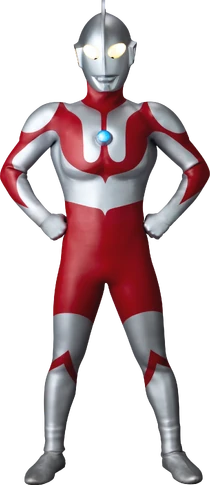
Ultraman (sering disebut Ultraman Hayata) adalah alien super raksasa asal Nebula M78.
Era: Showa
Asal: Nebula M78 (Land of Light)
Debut Pertama: Ultraman eps.1 pada 17 juli 1966
Special Move: Specium Ray
Human Form: Hayata
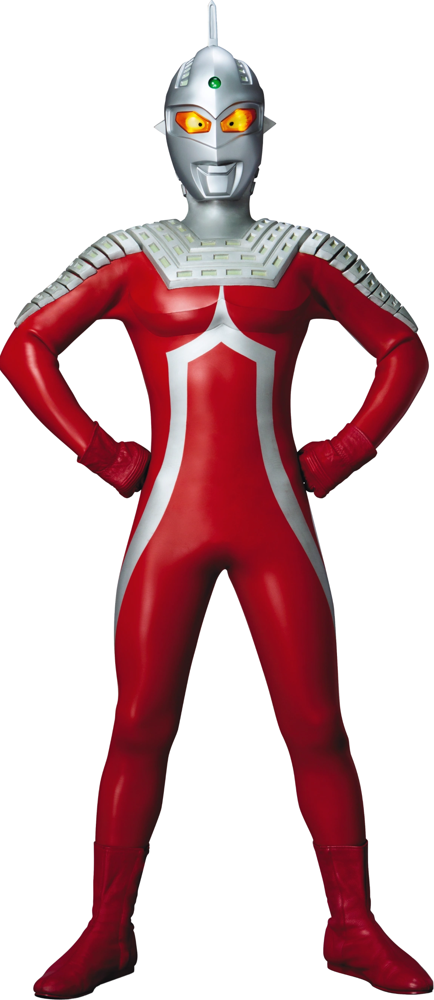
Ultraseven adalah pahlawan super klasik yang menyamar sebagai anggota Ultra Guard bernama Dan Moroboshi, ia tidak memiliki color timer.
Era: Showa
Asal: Nebula M78 (Land of Light)
Debut Pertama: Ultraseven eps.1 pada 1 oktober 1967
Special Move: Eye Slugger
Human Form: Dan Moroboshi
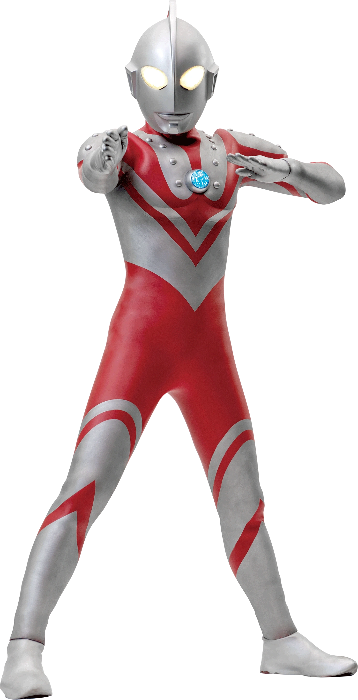
Ultraman Zoffy adalah komandan tertinggi dari Inter Galactic Defense Force dan saudara tertua dari Ultra Brothers. Ia dikenal karena tanda jasa (Star Marks) di dadanya.
Era: Showa
Asal: Nebula M78 (Land of Light)
Debut Pertama: Ultraman eps.39 pada 9 april 1967
Special Move: M87 Ray
Human Form: Profesor Otani
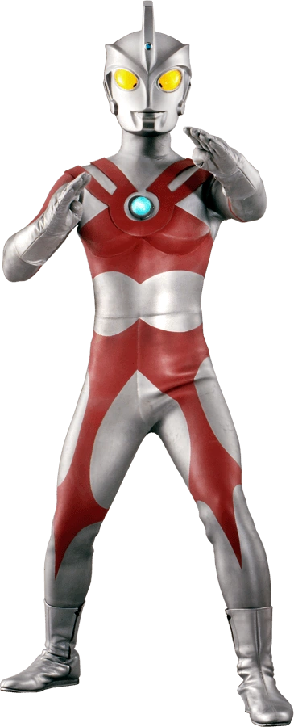
Ultraman Ace adalah anggota Ultra Brothers yang dikenal sebagai "Master of Guillotine" karena banyaknya jurus pemotong.
Era: Showa
Asal: Nebula M78 (Land of Light)
Debut Pertama: Ultraman Ace eps.1 pada 7 april 1972
Special Move: Metalium Beam, Ultra Guillotine
Human Form: Seiji Hokuto
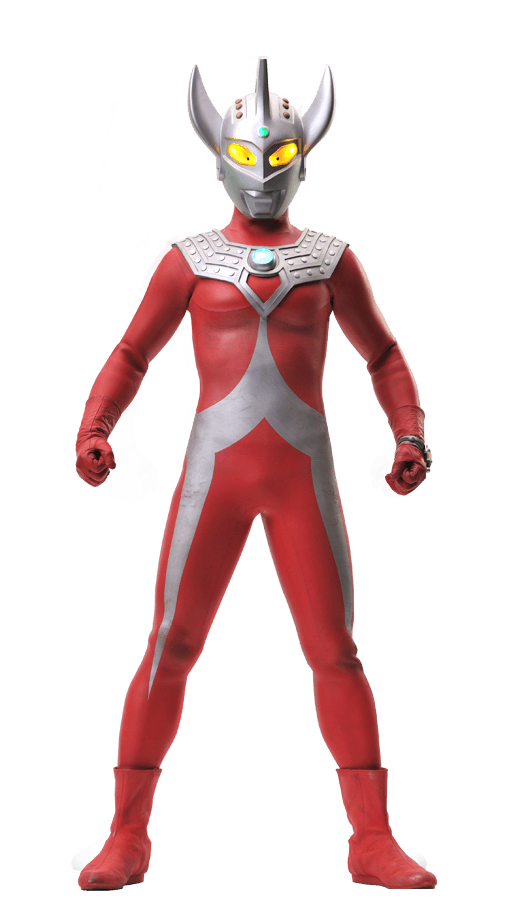
Ultraman Taro adalah anak kandung dari Ken (Father of Ultra) dan Marie (Mother of Ultra).
Era: Showa
Asal: Nebula M78 (Land of Light)
Debut Pertama: Ultraman Taro eps.1 pada 6 april 1973
Special Move: Strium Beam, Ultra Dynamite
Human Form: Kotaro Higashi
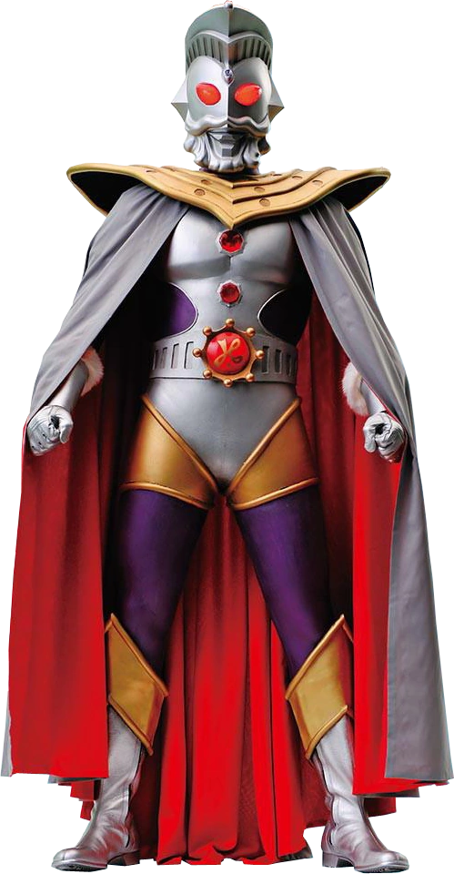
Ultraman King adalah sosok legendaris yang dianggap sebagai dewa atau tetua tertinggi bangsa Ultra. Ia mengawasi keseimbangan alam semesta.
Era: Showa
Asal: Planet King
Debut Pertama: Ultraman Leo eps.26 pada 4 oktober 1974
Special Move: King Flasher
Human Form: Tidak ada
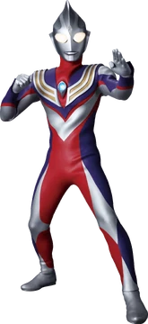
Ultraman Tiga adalah raksasa cahaya kuno yang melindungi bumi 30 juta tahun yang lalu.
Era: Heisei
Asal: Acient Earth
Debut Pertama: Ultraman Tiga eps.1 pada 7 september 1996
Special Move: Zeperion Beam
Human Form: Daigo Madoka
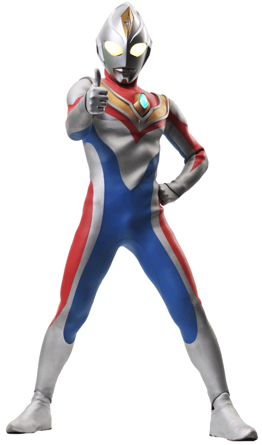
Ultraman Dyna adalah Ultra yang melambangkan semangat pantang menyerah di era Neo Frontier.
Era: Heisei
Asal: Tidak diketahui
Debut Pertama: Ultraman Dyna eps.1 pada 6 september 1997
Special Move: Solgent Ray
Human Form: Shin Asuka
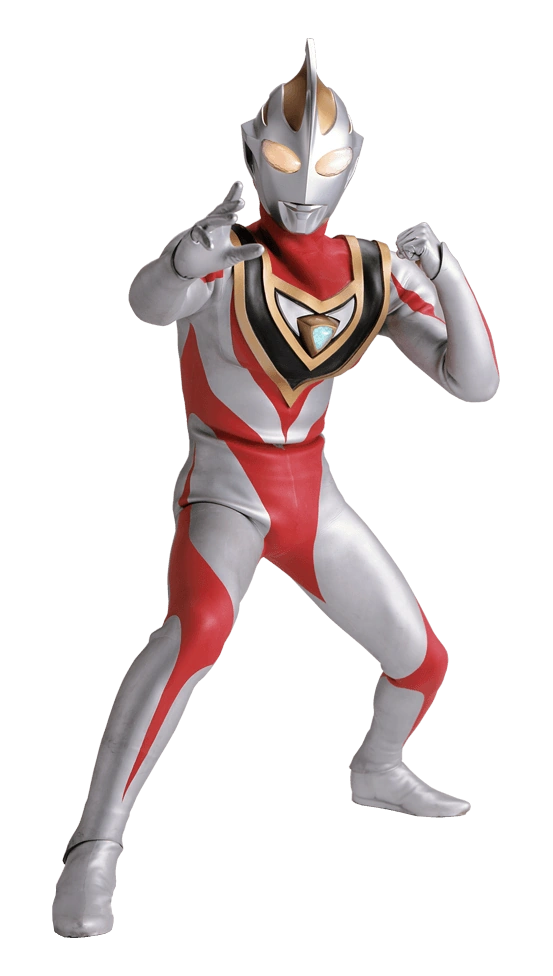
Ultraman Gaia adalah perwujudan dari kemauan planet bumi itu sendiri. Gaia melambangkan kekuatan tanah.
Era: Heisei
Asal: Bumi
Debut Pertama: Ultraman Gaia eps.1 pada 5 september 1998
Special Move: Photon Edge
Human Form: Gamu Takayama
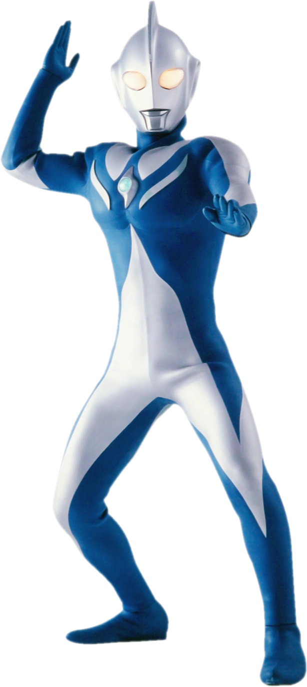
Ultraman Cosmos adalah raksasa biru yang menekankan kedamaian dan kasih sayang.
Era: Heisei
Asal: Luar angkasa
Debut Pertama: Ultraman Cosmos eps.1 pada 7 juli 2001
Special Move: Full Moon Rect
Human Form: Musashi Haruno
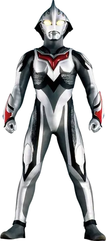
Ultraman Nexus adalah wujud perantara dari Ultraman Noa yang energinya diwariskan antar-generasi.
Era: Heisei
Asal: Tidak diketahui
Debut Pertama: Ultraman Nexus eps.1 pada 2 oktober 2004
Special Move: Cross-Ray Schtrom
Human Form: Maki, Himeja, Senjyu, Komon
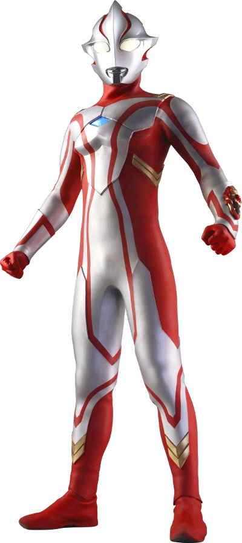
Ultraman Mebius adalah anggota termuda Space Garrison yang datang ke bumi untuk belajar.
Era: Heisei
Asal: Nebula M78 (Land of Light)
Debut Pertama: Ultraman Mebius eps.1 pada 8 april 2006
Special Move: Mebium Shoot
Human Form: Mirai Hibino
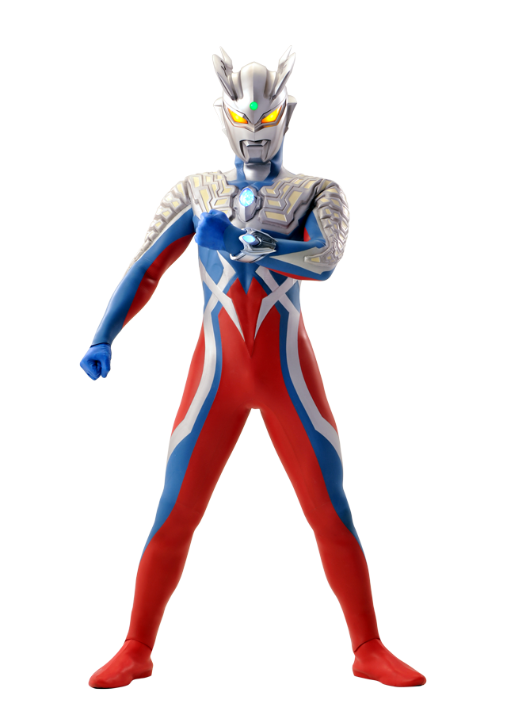
Ultraman Zero adalah anak dari Ultraseven yang merupakan Ultra terkuat di generasi nya.
Era: New Gen
Asal: Nebula M78 (Land of Light)
Debut Pertama: Mega monster battle: Ultra galaxy legend the movie pada 12 desember 2009
Special Move: Wide Zero Shot
Human Form: Run, Taiga, Leito
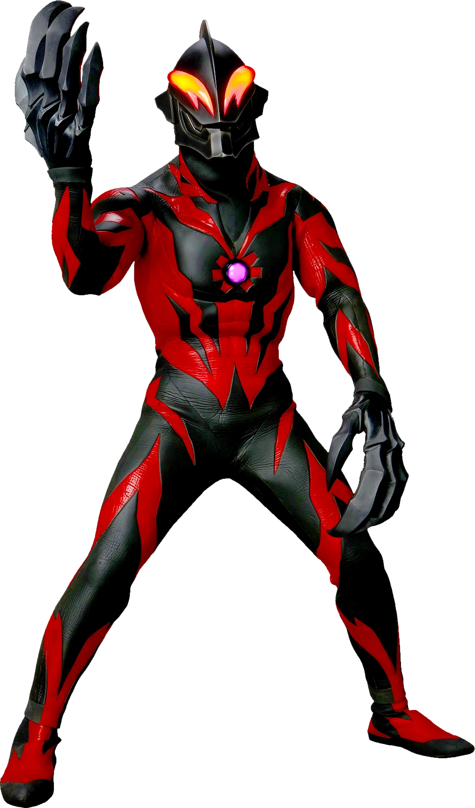
Ultraman Belial adalah Ultra pemberontak yang bergabung dengan alien Rayblood.
Era: New Gen
Asal: Nebula M78 (Land of Light)
Debut Pertama: Mega monster battle: Ultra galaxy legend the movie pada 12 desember 2009
Special Move: Deathcium Beam
Human Form: Kei Fukuide
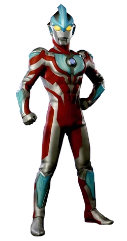
Ultraman Ginga adalah ultraman dari masa depan yang bertarung menggunakan Spark Dolls.
Era: New Gen
Asal: Masa Depan
Debut Pertama: Ultraman Ginga eps.1 pada 10 juli 2013
Special Move: Ginga Cross Shoot
Human Form: Hikaru Raido
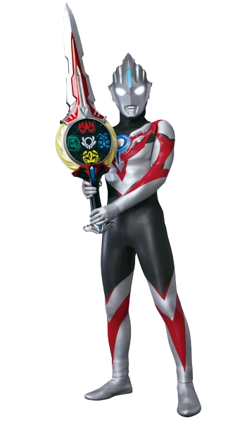
Ultraman Orb adalah pengembara galaksi yang meminjam kekuatan Ultra lain melalui kartu.
Era: New Gen
Asal: Planet O-50
Debut Pertama: Ultraman Orb eps.1 pada 9 juli 2016
Special Move: Sperion Ray
Human Form: Gai Kurenai
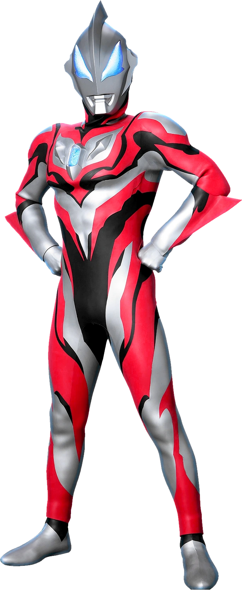
Ultraman Geed adalah Klon genetik Belial yang memilih jalan kebenaran.
Era: New Gen
Asal: Bumi
Debut Pertama: Ultraman Geed eps.1 pada 8 juli 2017
Special Move: Wrecking Burst
Human Form: Riku Asakura
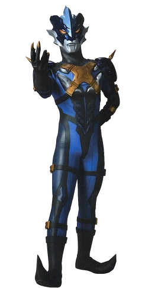
Ultraman Tregear adalah mantan ilmuan dari Land of Light dan sahabat Ultraman Taro yang jatuh ke dalam kegelapan karena terobsesi dengan kekosongan antara cahaya dan kegelapan.
Era: New Gen
Asal: Nebula M78 (Land of Light)
Debut Pertama: Ultraman R/B The Movie pada 8 maret 2019
Special Move: Trera Ardigaorm
Human Form: Kirisaki
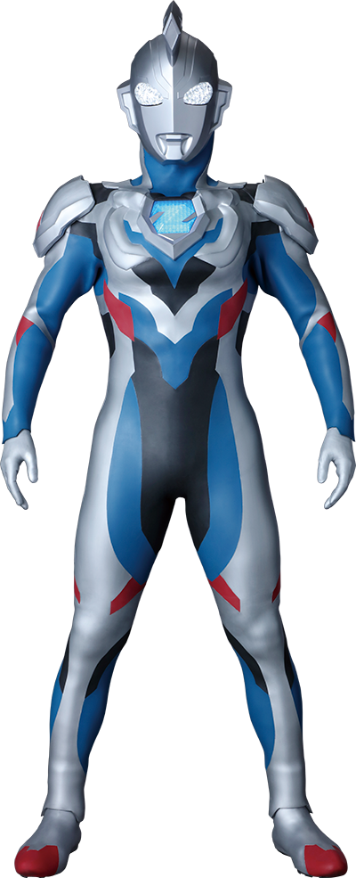
Ultraman Z adalah murid dari Ultraman Zero yang sangat bersemangat namun sering ceroboh. Ia terkenal dengan slogan "Ultra Happy".
Era: Reiwa
Asal: Nebula M78 (Land of Light)
Debut Pertama: Ultraman Z eps.1 pada 20 juni 2020
Special Move: Zestium Beam
Human Form: Haruki Natsukawa
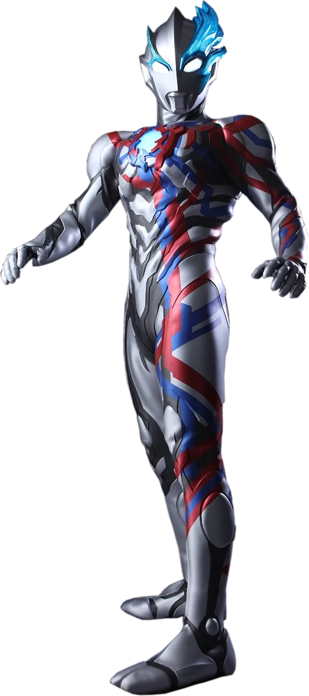
Ultraman Blazar adalah Ultra liar dari galaksi jauh yang memiliki gaya bertarung sangat primitif.
Era: Reiwa
Asal: Planet M421
Debut Pertama: Ultraman Blazar eps.1 pada 8 juli 2023
Special Move: Spiral Burrade
Human Form: Gento Hiruma